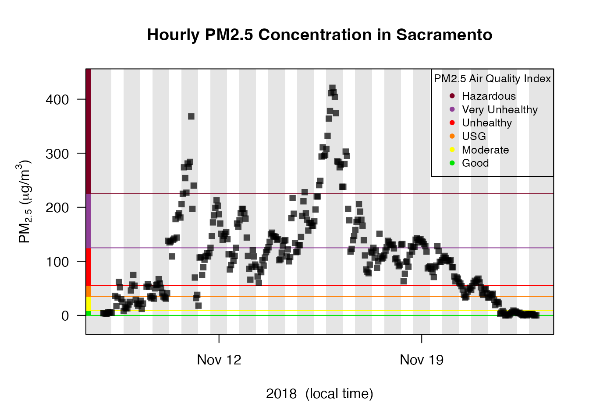

Introduction to AirMonitor
Mazama Science
2020-02-12
Source:vignettes/AirMonitor.Rmd
AirMonitor.RmdInstallation
Install from CRAN with:
install.packages('AirMonitor')
Install the latest version from GitHub with:
Available data
The USFS AirFire group regularly processes monitoring data in support of their various operational tools. Pre-processed, harmonized and QC’ed data files can be loaded with the following functions:
-
~_load()– load data based on a start- and end-time -
~loadAnnual()– load a year’s worth of data -
~loadDaily()– load the most recent 45 days of data (updated once per day) -
~loadLatest()– load the most recent 10 days of data (updated every hour)
Data archives go back over 10 years depending on the source of data.
Data pipelines
We encourage people to embrace “data pipeline” style coding as encouraged by dplyr and related packages. The special %>% operator uses the output of one function as the first argument of the next function, thus allowing for easy “chaining” of results.
With only a few exceptions, all the monitor_ functions accept a mts_monitor object as their first argument and generate a mts_monitor object as a result so they can be chained together.
A first example
Let’s say we are interested in the impact of smoke from the 2018 Camp Fire in the Sacramento area.
We would begin by creating a Camp_Fire mts_monitor object that has all the monitors in California for the period of interest:
Camp_Fire <-
monitor_loadAnnual(2018) %>%
monitor_filter(stateCode == 'CA') %>%
monitor_filterDate(
startdate = 20181108,
enddate = 20181123,
timezone = "America/Los_Angeles"
) %>%
monitor_dropEmpty()We can display these monitors (colored by maximum PM2.5 value) in an interactive map, zoom in and click on the monitor in downtown Sacramento to get it’s deviceDeploymentID:
monitor_leaflet(Camp_Fire)We can use this deviceDeploymentID to create a mts_monitor object for this single monitor and take a look at a timeseries plot:
Sacramento <-
Camp_Fire %>%
monitor_select("8ca91d2521b701d4_060670010")
Sacramento %>%
monitor_timeseriesPlot(
shadedNight = TRUE,
addAQI = TRUE
)
addAQILegend(cex = 0.8)
Next, we can use this specific location to create a mts_monitor object containing all monitors within 50 kilometers (31 miles) of Sacramento:
Sacramento_area <-
Camp_Fire %>%
monitor_filterByDistance(
longitude = Sacramento$meta$longitude,
latitude = Sacramento$meta$latitude,
radius = 50000
)
monitor_leaflet(Sacramento_area)We can display the hourly data for all the monitors and add day/night shading:
Sacramento_area %>%
monitor_timeseriesPlot(
shadedNight = TRUE,
addAQI = TRUE,
main = "Wildfire Smoke within 30 miles of Sacramento"
)
addAQILegend(lwd = 1, pch = NA)
We can average together all the monitors and create a local-time daily average for the Sacramento area:
Sacramento_area %>%
monitor_collapse(
deviceID = "Sacramento_area"
) %>%
monitor_dailyStatistic() %>%
monitor_getData()## # A tibble: 15 × 2
## datetime `0ad50de3895a9886_Sacramento_area`
## <dttm> <dbl>
## 1 2018-11-08 00:00:00 16.2
## 2 2018-11-09 00:00:00 22.9
## 3 2018-11-10 00:00:00 118.
## 4 2018-11-11 00:00:00 109.
## 5 2018-11-12 00:00:00 77.6
## 6 2018-11-13 00:00:00 69.3
## 7 2018-11-14 00:00:00 108.
## 8 2018-11-15 00:00:00 191.
## 9 2018-11-16 00:00:00 147.
## 10 2018-11-17 00:00:00 102.
## 11 2018-11-18 00:00:00 93.9
## 12 2018-11-19 00:00:00 62.1
## 13 2018-11-20 00:00:00 40.9
## 14 2018-11-21 00:00:00 31.3
## 15 2018-11-22 00:00:00 5.09Alternatively, we can plot the daily averages:
Sacramento_area %>%
monitor_collapse() %>%
monitor_dailyBarplot(
main = "Daily Average PM2.5 in the Sacramento Area"
)
addAQILegend(pch = 15, pt.cex = 1.5)Best of luck analyzing your local air quality data!